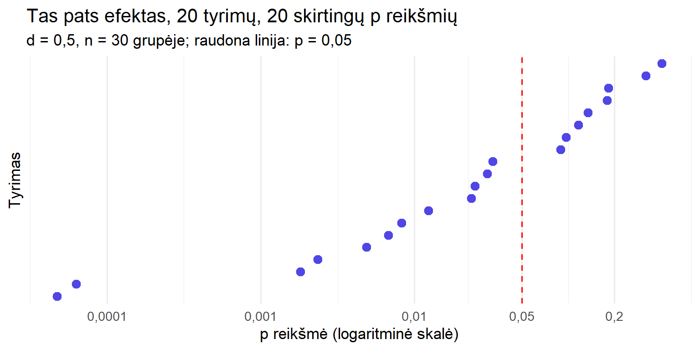
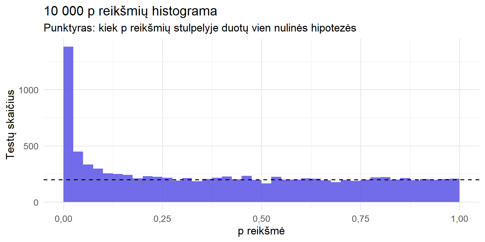

5 dalykai apie p reikšmę, kurių nepasako vadovėlis
statistika
p reikšmės
R
p reikšmė svyruoja nuo tyrimo iki tyrimo, jų negalima lyginti tarpusavyje, o tūkstantis p reikšmių pasako daugiau nei viena. Penkios pamokos, kurios padeda nepersistengti su p < 0,05.
Autorius
Paulius Alaburda
Paskelbta
2026 m. spalio 20 d.
Apie tai, ką p reikšmė reiškia ir ko ji nereiškia, jau rašiau. Bet net teisingai suprasta p reikšmė lengvai suklaidina. Ji sako mažiau, nei atrodo, ir mažiau stabiliai, nei norėtųsi. Čia surinkau penkis dalykus, kurie statistikos paskaitose dažniausiai lieka nepaminėti. Daugumą jų seniai aprašė Andrew Gelmanas ir kiti statistikai, tik lietuviškai apie juos skaityti beveik nėra kur.
1. p reikšmė pati yra atsitiktinis dydis
Mes įpratę p reikšmę traktuoti kaip tyrimo „verdiktą”. Iš tikrųjų tai dar vienas iš duomenų apskaičiuotas skaičius, ir jis svyruoja kartu su duomenimis. Pakartokite tą patį tyrimą su nauja imtimi ir gausite kitą p reikšmę, dažnai labai kitokią.
Sumodeliuokime 20 identiškų tyrimų. Tikrasis efektas visuose vienodas (vidutinis, d = 0,5), kiekvienoje grupėje po 30 tiriamųjų:
set.seed(2026)p_kartojimai <-replicate(20, t.test(rnorm(30), rnorm(30, mean =0.5))$p.value)ggplot(data.frame(tyrimas =1:20, p = p_kartojimai),aes(x = p, y =reorder(factor(tyrimas), p))) +geom_vline(xintercept =0.05, color ="red", linetype ="dashed") +geom_point(size =3, color ="#4F46E5") +scale_x_log10(breaks =c(0.0001, 0.001, 0.01, 0.05, 0.2, 1),labels =c("0,0001", "0,001", "0,01", "0,05", "0,2", "1")) +labs(title ="Tas pats efektas, 20 tyrimų, 20 skirtingų p reikšmių",subtitle ="d = 0,5, n = 30 grupėje; raudona linija: p = 0,05",x ="p reikšmė (logaritminė skalė)", y ="Tyrimas" ) +theme_minimal(base_size =13) +theme(axis.text.y =element_blank(), panel.grid.major.y =element_blank())

Mažiausia p reikšmė < 0,001, didžiausia = 0,406, o „reikšmingi” tik 12 iš 20 tyrimų. Tikrovė visiems vienoda, skiriasi tik atsitiktinumas.
Iš to išplaukia praktinė išvada. Jei jūsų tyrimas davė p = 0,03, o kolegos p = 0,2, tai dar nereiškia, kad vienas iš jūsų suklydo. Tokie skirtumai visiškai įprasti, kai tyrimų galia vidutinė.
2. p reikšmių negalima lyginti tarpusavyje
Klasikinė klaida skamba taip: „Vyrų grupėje efektas reikšmingas (p = 0,01), moterų nereikšmingas (p = 0,3), vadinasi, vyrams ir moterims intervencija veikia skirtingai.” Ši išvada nepagrįsta, nes dviejų p reikšmių skirtumas pats nėra statistinis testas.
Gelmanas ir Sternas (Gelman ir Stern 2006) tai iliustravo paprastu pavyzdžiu. Du tyrimai matuoja tą patį efektą:
tyrimas ivertis se p
1 A 25 10 0.01241933
2 B 10 10 0.31731051
# O dabar patikrinkime, ar tyrimai skiriasi vienas nuo kitoskirtumas <-25-10se_skirtumo <-sqrt(10^2+10^2)2*pnorm(-skirtumas / se_skirtumo)
[1] 0.2888444
A tyrimas reikšmingas (p = 0,012), B ne (p = 0,317). Tačiau patikrinę, ar tyrimai skiriasi vienas nuo kito, gauname p = 0,289. Duomenys visiškai suderinami su tuo, kad abu tyrimai matuoja tą patį efektą.
Pagrindinė mintis telpa į vieną sakinį: skirtumas tarp „reikšmingo” ir „nereikšmingo” pats nebūtinai yra reikšmingas. Jei norite teigti, kad efektas skiriasi tarp grupių, tikrinkite tai tiesiogiai, pavyzdžiui, sąveikos nariu regresijoje, o ne lygindami dvi atskiras p reikšmes.
Versle tai dažna
A/B testų ataskaitose dažnai rašoma „naujas dizainas veikė mobiliuosiuose (p = 0,02), bet ne kompiuteriuose (p = 0,4)“. Prieš sprendžiant, kad kanalams reikia skirtingų sprendimų, verta patikrinti, ar efektai tarp kanalų apskritai skiriasi.
3. Tūkstantis p reikšmių pasako daugiau nei viena
Kai testų daug, pavyzdžiui, genų raiškos tyrime, didelėje apklausoje ar dešimtyse A/B testų, verta nubraižyti visų p reikšmių histogramą. Tai vienas naudingiausių diagnostinių grafikų, kurį gerai aprašė Davidas Robinsonas (Robinson 2014).
Sumodeliuokime 10 000 testų. 80 % jų nulinė hipotezė teisinga, 20 % efektas yra:
set.seed(1)k <-10000yra_efektas <-runif(k) <0.2p_daug <-sapply(yra_efektas, function(e)t.test(rnorm(20), rnorm(20, mean =if (e) 0.8else0))$p.value)ggplot(data.frame(p = p_daug), aes(x = p)) +geom_histogram(breaks =seq(0, 1, 0.025), fill ="#4F46E5", alpha =0.8) +geom_hline(yintercept = k *0.8*0.025, linetype ="dashed") +scale_x_continuous(labels =function(x) lt(x)) +labs(title ="10 000 p reikšmių histograma",subtitle ="Punktyras: kiek p reikšmių stulpelyje duotų vien nulinės hipotezės",x ="p reikšmė", y ="Testų skaičius" ) +theme_minimal(base_size =13)

Kai nulinė hipotezė teisinga, p reikšmės pasiskirsčiusios tolygiai, todėl histograma sudaryta iš lygaus „grindų” sluoksnio ir smailės prie nulio, kur susitelkę tikri efektai. Pagal formą galima daug ką pasakyti:
Histogramos forma
Ką tai reiškia
Tolygi + smailė prie 0
Viskas tvarkoje: dalis hipotezių turi tikrą efektą
Visiškai tolygi
Tikrų efektų beveik nėra (arba galia per maža juos aptikti)
Kalnelis prie 1 arba dvi kupros
Testas netinka duomenims: pažeistos prielaidos, vienpusis testas ne į tą pusę
Retos „šukos” su tarpais
Diskretūs duomenys (pvz., maži dažniai), p reikšmės gali įgyti tik kelias reikšmes
Svarbu ir tai, kad net smailėje prie nulio yra klaidingų atradimų. Šiame pavyzdyje iš 1831 testų su p < 0,05 417 yra nuliniai, tai yra 23 % „atradimų”. Todėl atliekant daug testų reikia p reikšmių korekcijos.
4. p reikšmę lengviau suprasti kaip „nuostabą”
Viena kliūtis yra pati skalė: p = 0,05 ir p = 0,01 atrodo beveik vienodai maži, nors įrodymų stiprumas skiriasi daugiau nei dvigubai. Rafi ir Greenlandas (Rafi ir Greenland 2020) siūlo p reikšmę perskaičiuoti į S reikšmę (angl. surprisal):
\[
S = -\log_2(p)
\]
S reikšmė matuojama bitais, ir ją galima suprasti per monetos metimą: S bitų tiek pat nustebina, kiek S iš eilės iškritusių herbų metant simetrišką monetą.
Taigi p = 0,05 atitinka maždaug 4 herbus iš eilės. Toks rezultatas nustebintų, bet vargu ar įtikintų, kad moneta nesąžininga. Kad nuostaba prilygtų 10 herbų iš eilės, reikia p ≈ 0,001.
Tie patys autoriai siūlo ir kitą formuluotę. Užuot rašius „reikšminga / nereikšminga”, p reikšmę verta skaityti kaip duomenų suderinamumą su hipoteze. Maža p reikšmė rodo, kad duomenys blogai dera su nuline hipoteze (ir su visomis kitomis modelio prielaidomis). Didelė rodo, kad dera, bet tai dar nereiškia, kad hipotezė teisinga.
5. Problema dažnai ne pati p reikšmė
Po visų šių pastabų gali kilti noras p reikšmių atsisakyti. Gelmanas (Gelman 2016) į tai atsako, kad problemos su p reikšmėmis yra ne vien p reikšmių problemos. Tos pačios bėdos išlieka ir su pasikliautinaisiais intervalais ar Bajeso faktoriais, kai jie naudojami tuo pačiu būdu:
Dichotomizavimas. Tolydų įrodymų matą paverčiame „taip / ne” ties 0,05 riba ir taip prarandame informaciją.
Šakotis kelias (angl. garden of forking paths). Kai analizės sprendimai (kurie tiriamieji atmetami, kokie kintamieji įtraukiami, kuris testas pasirenkamas) priimami jau matant duomenis, p reikšmė praranda savo prasmę, net jei niekas sąmoningai nesukčiavo.
Šiaudinė nulinė hipotezė. Tikriname, ar efektas lygiai nulis, nors ir taip žinome, kad nėra. Iš tikrųjų mus domina, koks efektas didelis ir ar jis svarbus.
Kada tuomet p reikšmė naudinga? Kai ji atlieka kuklų darbą: kaip pirmas filtras, ar signalą galima atskirti nuo triukšmo, ir kaip modelio patikrinimas, ar duomenys dera su prielaidomis. Daug sėkmingų taikomųjų analizių apskritai apsieina be p reikšmių ir remiasi efektų įverčiais, neapibrėžtumu ir modeliavimu.
Santrauka
Pamoka
Ką daryti
p reikšmė svyruoja nuo tyrimo iki tyrimo
Nevertinkite vieno tyrimo kaip galutinio verdikto; žiūrėkite į efekto dydį ir intervalą
p reikšmių negalima lyginti
Grupių skirtumus tikrinkite tiesiogiai (sąveika)
Daug testų – žiūrėkite į histogramą
Patikrinkite formą ir taikykite korekciją
p reikšmę verta skaityti kaip nuostabą
p = 0,05 ≈ 4 herbai iš eilės
Problema dažnai ne p reikšmė
Venkite dichotomijos ir analizės sprendimų po duomenų peržiūros
Jei jūsų analizėje daug testų ar grupių palyginimų ir nesate tikri, kurios išvados tvirtos, parašykite man. Kartu peržiūrėsime analizės planą ir rezultatus.
Gelman, Andrew, ir Hal Stern. 2006. „The difference between ,significant‘ and ,not significant‘ is not itself statistically significant“. The American Statistician 60 (4): 328–31. https://doi.org/10.1198/000313006X152649.
Rafi, Zad, ir Sander Greenland. 2020. „Semantic and cognitive tools to aid statistical science: replace confidence and significance by compatibility and surprise“. BMC Medical Research Methodology 20: 244. https://doi.org/10.1186/s12874-020-01105-9.